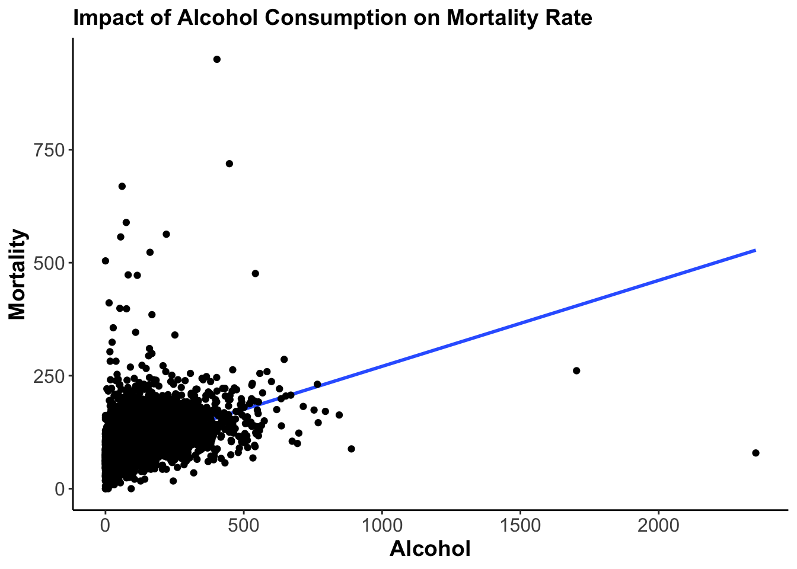

Worksheet Week 8
Self-Assessment Questions11
- Compare bivariate regression and multiple regression.
- Give an example of the relationship in which you could apply multiple linear regression.
- How do you interpret partial slope coefficients?
- How do you interpret adjusted R-Squared in regression analysis?
Multiple Regression in R – Guided Example
Use the data set “WDI_PO12Q.dta” from Moodle. Data are taken from World Bank (2020) and Marshall & Gurr (2020).
Put it into an appropriate working directory for this seminar and create a dedicated and save it into the same working directory.
Import the data set into R:
Once again, here is the overview of the variables available and their respective label in Table \(\ref{tbl:variables}\):

- Let’s take the example from Week 7 back up. First re-run the regression I used back then.
Call:
lm(formula = gdppc ~ lifeexp, data = wdi)
Residuals:
Min 1Q Median 3Q Max
-18457 -9877 -4187 4963 78242
Coefficients:
Estimate Std. Error t value Pr(>|t|)
(Intercept) -94306.8 10406.7 -9.062 3.33e-16 ***
lifeexp 1503.2 144.4 10.412 < 2e-16 ***
---
Signif. codes: 0 '***' 0.001 '**' 0.01 '*' 0.05 '.' 0.1 ' ' 1
Residual standard error: 14690 on 167 degrees of freedom
(26 observations deleted due to missingness)
Multiple R-squared: 0.3936, Adjusted R-squared: 0.39
F-statistic: 108.4 on 1 and 167 DF, p-value: < 2.2e-16- Interpret the coefficients.
- Now we use a different regressor, say “Urban population (% of total)”.
Call:
lm(formula = gdppc ~ urban, data = wdi)
Residuals:
Min 1Q Median 3Q Max
-28588 -10681 -3110 6863 152303
Coefficients:
Estimate Std. Error t value Pr(>|t|)
(Intercept) -16983.43 3872.34 -4.386 1.98e-05 ***
urban 542.03 61.74 8.779 1.42e-15 ***
---
Signif. codes: 0 '***' 0.001 '**' 0.01 '*' 0.05 '.' 0.1 ' ' 1
Residual standard error: 19120 on 176 degrees of freedom
(17 observations deleted due to missingness)
Multiple R-squared: 0.3045, Adjusted R-squared: 0.3006
F-statistic: 77.07 on 1 and 176 DF, p-value: 1.417e-15- Interpret the coefficients.
- If we want to assess the influence of both independent variables together, we type:
Call:
lm(formula = gdppc ~ lifeexp + urban, data = wdi)
Residuals:
Min 1Q Median 3Q Max
-22570 -8825 -2143 5594 74445
Coefficients:
Estimate Std. Error t value Pr(>|t|)
(Intercept) -74786.14 10690.13 -6.996 6.17e-11 ***
lifeexp 1012.17 172.70 5.861 2.41e-08 ***
urban 273.74 59.13 4.629 7.37e-06 ***
---
Signif. codes: 0 '***' 0.001 '**' 0.01 '*' 0.05 '.' 0.1 ' ' 1
Residual standard error: 13860 on 166 degrees of freedom
(26 observations deleted due to missingness)
Multiple R-squared: 0.463, Adjusted R-squared: 0.4565
F-statistic: 71.55 on 2 and 166 DF, p-value: < 2.2e-16- Interpret the coefficients.
- Because I am nice, I am producing an overview of all three regressions in the following table:
| Dependent variable: | |||
| per capita GDP | |||
| (1) | (2) | (3) | |
| Life Expectancy | 1,503.211*** | 1,012.168*** | |
| (144.371) | (172.696) | ||
| Urbanisation | 542.033*** | 273.735*** | |
| (61.743) | (59.134) | ||
| Constant | -94,306.810*** | -16,983.430*** | -74,786.150*** |
| (10,406.730) | (3,872.336) | (10,690.130) | |
| Observations | 169 | 178 | 169 |
| R2 | 0.394 | 0.305 | 0.463 |
| Adjusted R2 | 0.390 | 0.301 | 0.456 |
| Note: | p<0.1; p<0.05; p<0.01 | ||
- How have the slope coefficients changed? Why?
- Which model explains the level of GDP best? Why?
- Specify the SRF for Model 3, paying special attention to notation.
- Now assume, we want to know whether education has a bearing on the level of GDP. We call:
and also add it to the joint model:
This should lead to these results:
| Dependent variable: | |||||
| per capita GDP | |||||
| (1) | (2) | (3) | (4) | (5) | |
| Life Expectancy | 1,503.211*** | 1,012.168*** | 973.985** | ||
| (144.371) | (172.696) | (411.375) | |||
| Urbanisation | 542.033*** | 273.735*** | 227.126** | ||
| (61.743) | (59.134) | (83.427) | |||
| Literacy | 258.407** | -221.731 | |||
| (97.381) | (142.455) | ||||
| Constant | -94,306.810*** | -16,983.430*** | -74,786.150*** | -12,967.000 | -55,246.840*** |
| (10,406.730) | (3,872.336) | (10,690.130) | (8,529.810) | (19,311.130) | |
| Observations | 169 | 178 | 169 | 40 | 39 |
| R2 | 0.394 | 0.305 | 0.463 | 0.156 | 0.497 |
| Adjusted R2 | 0.390 | 0.301 | 0.456 | 0.134 | 0.454 |
| Note: | p<0.1; p<0.05; p<0.01 | ||||
- In Model 5 the coefficient for “Literacy” has turned insignificant. Reproduce the results in Table 4 to find out which variable takes away the significance.
| Dependent variable: | |||
| per capita GDP | |||
| (1) | (2) | (3) | |
| Literacy | 258.407** | -223.305 | 28.390 |
| (97.381) | (154.620) | (99.706) | |
| Life Expectancy | 1,483.785*** | ||
| (397.567) | |||
| Urbanisation | 315.375*** | ||
| (77.633) | |||
| Constant | -12,967.000 | -77,851.340*** | -12,399.610* |
| (8,529.810) | (18,924.060) | (7,189.937) | |
| Observations | 40 | 39 | 40 |
| R2 | 0.156 | 0.390 | 0.417 |
| Adjusted R2 | 0.134 | 0.357 | 0.385 |
| Note: | p<0.1; p<0.05; p<0.01 | ||
What can we conclude from this investigation?
Does the variable
infanthave the same effect? What do you conclude from this?Which measurement explains GDP better,
lifeorinfant?
| Dependent variable: | ||
| per capita GDP | ||
| (1) | (2) | |
| Life Expectancy | 1,503.211*** | |
| (144.371) | ||
| Infant Mortality | -524.111*** | |
| (73.885) | ||
| Constant | -94,306.810*** | 26,467.130*** |
| (10,406.730) | (2,257.385) | |
| Observations | 169 | 178 |
| R2 | 0.394 | 0.222 |
| Adjusted R2 | 0.390 | 0.218 |
| Note: | p<0.1; p<0.05; p<0.01 | |
Multiple Regression in R – Independent Analysis
Before you start with these, please pause and let Flo know that you are done. We will compare notes on your answers up to this point, to make sure that you are on the right track for the independent exercises.
- Use the
wdidata frame. Setpolity5as the dependent variable, and choose three sensible variables which you believe could influence democracy. Note that the Polity V Score codes regimes from -10 (indicating perfect autocracy) to +10 (indicating perfect democracy). - State the null- and alternative hypotheses for each of the independent variables chosen.
- Plot two of the bivariate models in a scatter plot (black points) with fitted regression line (in red). Use base R, or
ggplot. Does the direction of influence agree with your hypotheses? - Run all possible regression models. Put the results into a suitable table, noting the p-values of each coefficient in the brackets underneath. Try all different combinations of your variables to see which of the three is the best to explain democracy.
- Specify the Sample Regression Function (SRF) for models 1, 4, and 7.
- Interpret the intercept and one of the slope coefficients in models 1, 4, and 7.
- Interpret the model fit measure for models 1, 4, and 7.
- What do we conclude with respect to the hypotheses stated in Exercise 2 from this analysis?
- Collate a PowerPoint (Keynote) presentation with one slide for each of the preceding eight points. We will discuss this in Week 9.
Solutions
You can find the Solutions in the Downloads Section.
Homework
For next week, please
- Finish the independent exercises.
- Read one of the following two articles:
- Arat, Zehra. 1988. “Democracy and Economic Development: Modernization Theory Revisited”. Comparative Politics 21(1): 21-36.
- Heger, Lindsay, and Idean Salehyan. 2007. “Ruthless Rulers: Coalition Size and the Severity of Civil Conflict.” International Studies Quarterly 51(2): 385-403.
Identify the following components:
- Research Question
- Theory
- Hypotheses
- Method
- Results
- Conclusion (Answer to the research question)
What do you like / dislike about the article? Do you have any points of critique?
Some of the content of this worksheet is taken from Reiche (forthcoming).↩︎